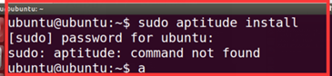
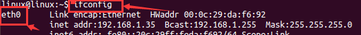
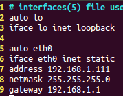
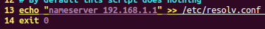
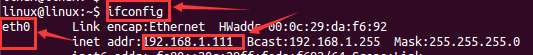
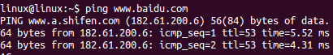

1、软件包管理分类命令的问题sudo:aptitude:command not found
问题描述：

问题解决：
在Ubuntu14.04的环境下，输入sudo apt 然后加tab tab按两次可以看到所有的提示命令，在Ubuntu14.04的环境下没有aptitude的这个命令，（sudo apt-get install aptitude），课程录制所使用的环境是Ubuntu18.04，版本比较高，存在这个命令。
2、命令行网络配置：
（1）、首先终端输入ifconfig看看自己电脑用的网卡名字
（本人网卡是eth0，IP：192.168.1.35）； 注意：eth0 是阿拉伯数字零0，不是字母哦O。

（2）、终端输入：sudo vi /etc/network/interfaces开始配置网络
配置静态IP，然后保存退出: 在配置过程中需要提前知道自己windows的IP是多少，在此时设置的IP要和windows在同一网段。如我的windows的Ip是1网段，所以我也设置虚拟机静态IP是1网段，但是虚拟机IP和电脑·IP不能重复一样。

（3）、终端输入：sudo vi /etc/resolv.conf去配置DNS
在最后加入一句话：nameserver 192.168.1.1 然后保存退出。
（4）、终端输入：sudo vi /etc/rc.local 打开
在后面加上echo “nameserver 192.168.1.1”>> /etc/resolv.conf exit 0 输出重定向到此文件保证每次重启网卡都是一样的，永久生效。 此时网络已配置完毕，然后关闭虚拟机重启；
（5）、虚拟机重启之后，终端输入：sudo /etc/init.d/networking restart 重启网卡就好了。

（6）、最后终端输入 ping www.baidu.com 测试是否能上网
